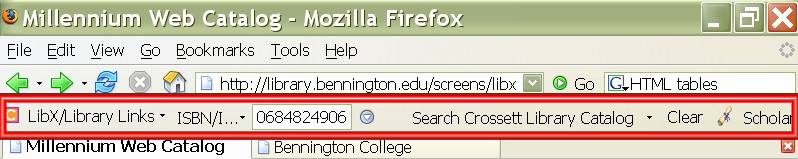
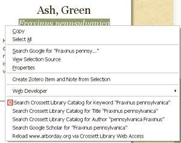
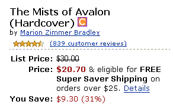

|
LibX Toolbar for Crossett Library
What is the LibX Toolbar, and Why should you install it on your open source browser?
LibX Bennington College Edition is a toolbar that provides direct access to Crossett Library resources.
Click here to jump to the installation links.

Features:
Toolbar & right-click context menu:
Search Crossett Library's catalog directly from the LibX toolbar or using the right-click context menu.
Support for off-campus access via Web Access Management Proxy:
Using the Library's off-campus proxy, you may reload a page through the proxy, or follow a link via the proxy, making it appear as though you are coming from an on-campus computer. |
 |
Quick full text access to journal articles:
LibX uses Google Scholar to search for articles and directs the user to the electronic copy subscribed to by Crossett Library. Select a citation, then drag-and-drop it onto the Scholar button on the toolbar. You can use this feature even from inside a PDF file, which makes retrieving papers referenced in a PDF file a snap.
To use this feature, you must activate this link in the Firefox profile in which LibX is installed:
Activate Google Scholar support. (See also LibX FAQ Question 11)
Support for embedded cues:
LibX places cues in web pages you visit if Crossett Library has resources related to that page. Whenever you see the cue, click on the link to look at what Crossett Library has to offer. For instance, book pages at Amazon or Barnes & Noble will contain cues that link to the book's entry in the Crossett Library Catalog. Cues are displayed at Google, Yahoo! Search, the NY Times Book Review, and other pages. Watch this screencast for examples of this cool feature. NOTE: the cues in the screencast are for another library, and therefore do not look like ours, though they act in the same way. |
 |
Support for xISBN:
A book title can have different ISBNs for the paperback, the hardcover, even for different editions. LibX supports OCLC's xISBN service: you can find a book, given an ISBN, even if the Crossett Library holds this book under a different ISBN.
Installation:
If Firefox displays a message "To protect your computer, Firefox prevented this site... from installing software on your computer.", press the button labelled "Edit Options..." and click "Allow" add www.lib.vt.edu to the list of websites from which extensions may be installed. Then click "Ok" and visit the "Install" link again.
This extension works with Firefox and Internet Explorer only.
For help with installing and using the LibX toolbar extension, please contact Kat Berry, Technology Resources Librarian, kberry@bennington.edu EXT. 4601.
Copyright:
LibX is distributed under the
Mozilla Public License. The copyright is held jointly by Annette Bailey and Virginia Tech.
Privacy:
By using this extension you may send the URL of pages you are currently visiting to the Crossett library catalog server. Such information is sent only if you are actively using the extension; it is never sent automatically. Bennington College and Crossett Library do not use this information; our privacy policy explictly states the Institutions position on the matter. Still, If you wish to avoid this you must turn off the referrer URL by setting network.http.sendRefererHeader to 0 in your preferences.
For more information about LibX, visit the LibX Homepage. LibX is available for customization by other libraries.
Back to the top
|